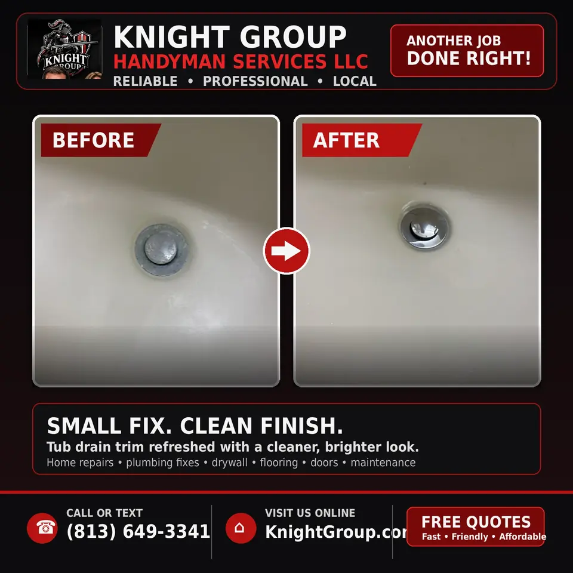

Toilet repair and replacement
Running toilets, weak flushes, leaks at the base, and wax ring corrections within handyman plumbing scope.
Handyman scope notice: Knight Group provides handyman-scope fixture replacement, minor repairs, and troubleshooting using existing connections. We do not perform work requiring a licensed plumbing, electrical, HVAC, or general contractor license. If a job requires a permit or licensed trade contractor, we identify that before work begins and refer or coordinate appropriately.
Toilet repair and replacement
Running toilets, weak flushes, leaks at the base, and wax ring corrections within handyman plumbing scope.
Toilet components we service or swap

Tank internals wear silently until water bills climb or floors stain at the base.
- Flappers and fill valves on aging tank assemblies
- Flush valve gaskets on canister-style units
- Closet bolts and washers when bowls rock
- Wax rings and reinforced rings on standard flanges
- Supply lines and angle stops that weep at ferrules
- Handles, chains, and trip levers with mismatched lengths
- Seat replacements and hinge kits for rental units
- Like-for-like bowl swaps when flanges remain sound
Floor and flange honesty
We inspect subfloor softness around closet bolts before declaring a wax ring fix sufficient. Hidden flange cracks and offset drains may require licensed plumbing — we document findings with photos for your records.
Toilet repair and replacement within handyman scope

Running toilets, weak flushes, and leaks at the base waste water and stain floors. Knight Group diagnoses flappers, fill valves, wax rings, and closet bolts on existing flanges — standard toilet repair handyman work across Safety Harbor and Pinellas County.
Toilet issues we resolve in one trip
- Continuous run and ghost flushing from worn flappers or floats
- Rocking bowls from broken closet bolts or compressed wax rings
- Supply line weeps and corroded shutoffs at the wall
- Handle, chain, and flush valve assemblies on older tanks
- Like-for-like toilet swaps on sound flanges with accessible shutoffs
When a plumber should take over

Cracked flanges, raised floors needing extender kits beyond handyman scope, or drain line blockages in the main stack require licensed plumbing. We identify those conditions during the estimate instead of masking them with caulk.
See also
Drain unclogging, shutoff valve repair, and emergency services for active overflows.
Toilet service from Safety Harbor to St. Petersburg

Older Clearwater condos sometimes have access panels that complicate closet bolt torque — we plan wrench paths before committing to bowl removal. Running toilets in vacant Largo rentals inflate water bills fast — photos of tank internals help us quote flapper vs. fill valve paths.
Main-line backups affecting multiple fixtures need licensed plumbers — we will not clear what requires camera inspection downstream.
Toilet repair appointments
Tank lid off photos showing flapper and fill valve types help us pack parts. Report if the bowl rocks or if multiple fixtures backup simultaneously — routing differs for branch vs. main issues.
Frequently asked questions
Common questions homeowners ask before booking this type of work in Pinellas County.
Can a handyman fix a running toilet?
Yes — flappers, fill valves, chains, and many leak issues are standard handyman-scope toilet repairs.
Do you replace wax rings?
Yes when flanges are sound and bowls rock from worn rings or bolts — we inspect flange condition first.
Can you install a customer-supplied toilet?
Yes on accessible shutoffs and standard flanges within scope.
When does toilet work require a licensed plumber?
Cracked flanges, main line backups, or rough-in moves require licensed plumbing — we identify those on site.
Do you repair leaks at the toilet base?
Yes when wax rings or closet bolts are the cause and the flange is serviceable.
Can you unclog a toilet during the same visit?
Simple clogs may be cleared when the blockage is local. Main line issues need a plumbing contractor.


Ready to schedule?
Tell us what needs attention and where the property is located.